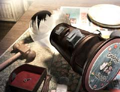

| 概要 | 地図 |
| 淡いヒント集 | ヒント集 | 的確なヒント集 |
| 攻略最短ルート |
| 場所選択に戻る |
ロマンスバーグ(前半)
| オープニング オスカーからの電話 エミリオフ大佐と会う ゼンマイを巻く装置のハンドルを回し、レバーを引く  オスカーに話しかける  下へ続く階段にある閉まった門へ移動し、閉まっていることを確認  石炭を入れる装置を調べる 装置のレバーを引き、故障していることを確認 エミリオフ大佐の店へ移動 (鍵と門のことを徹底的に追及する)  カウンターの奥にある「小さな鍵」を入手  キャンディーマシーンを調べる 左のマシーンに対し「小さな鍵」を使う 「コイン」入手 左から2番目のコインを、真ん中のマシーンに対して使い「フィッシュキャンディー」入手 左から5番目のコインを、右のマシーンに対して使い「カタラスキャンディー」入手 石炭を入れる装置の下にいるマルカに話しかける (キャンディーと交換であるものをもらえるように交渉) マルカに対し「カタラスキャンディー」を使う 「門の鍵」入手 閉まっている門に対し「門の鍵」を使う 下へ移動 ムービー
| 次へ >> |
|
| 場所選択に戻る |
| 概要 | 地図 |
| 淡いヒント集 | ヒント集 | 的確なヒント集 |
| 攻略最短ルート |
Syberia II
| 目次へ戻る | ページの上部へ |